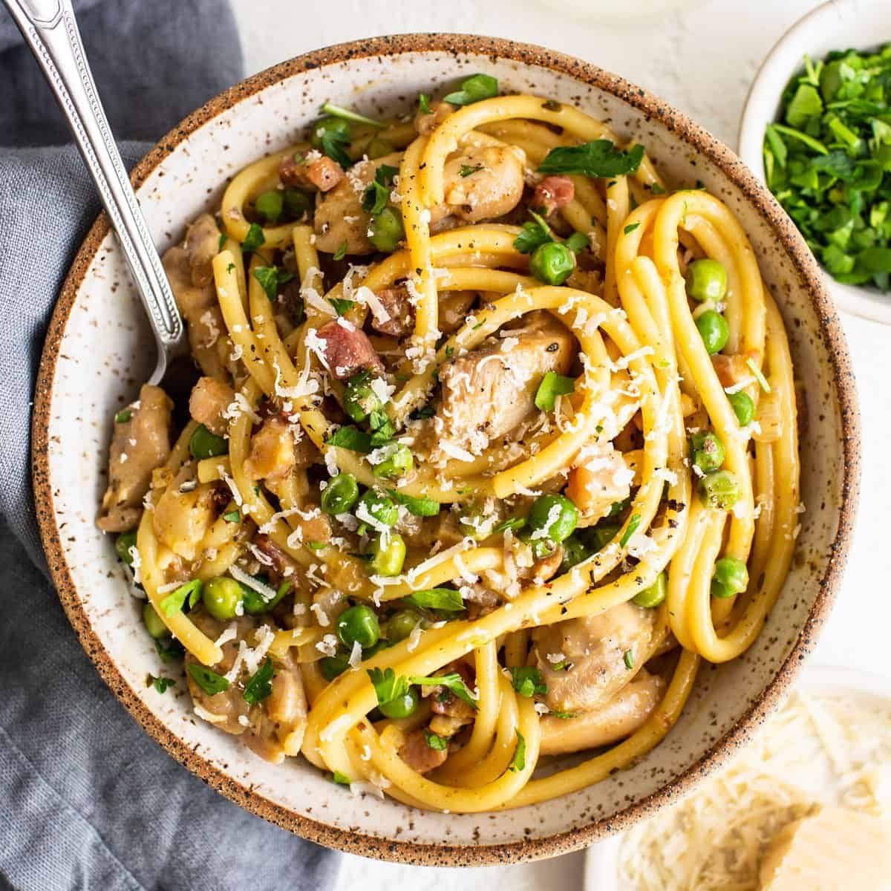

Chicken Carbonara

Description
Chicken carbonara is a popular variation on classic Italian carbonara, a pasta characterized by its rich,
silky, egg-based sauce and mellow, slightly smoky, peppery flavor—from guanciale, a cured meat made from pork jowl.
Ingredients
- 6 slices bacon, chopped
- 1 and half pounds skinless, boneless chicken breast halves
- salt and ground black pepper to taste
- 3 cloves garlic
- 1 teaspoon ground black pepper
- half cup white wine
- 1 and half cups grated parmesan cheese
- 3 large eggs
- 1 gallon water
- 1 pound spaghetti
- 2 cups frozen peas